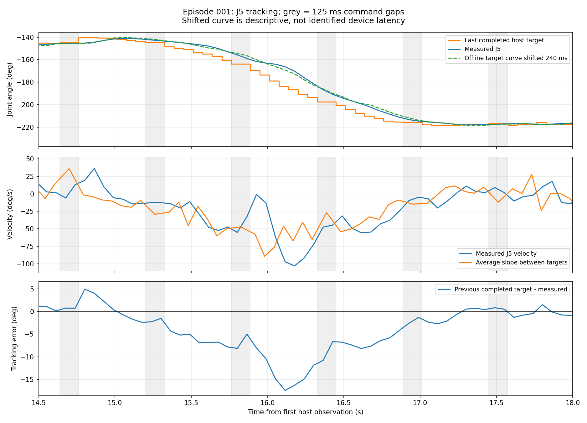
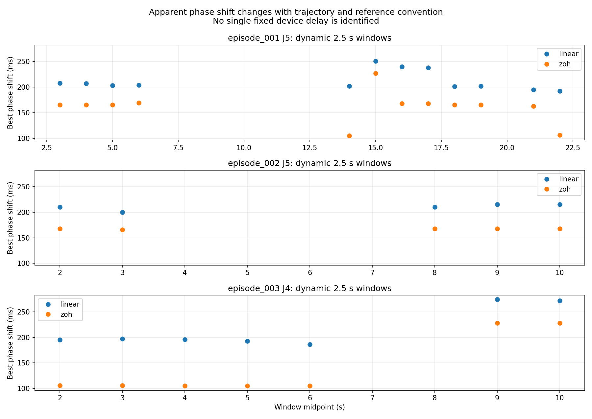

保留 Mode 6 基线；优先验证 Mode 1 的轨迹跟随能力，避免直接替换 16 Hz 下发接口。
2026-10-12 · session_20261011_220535 · 本轮仅阅读源码、官方资料和离线 Raw。未连接设备，未运行真机诊断、回放或策略，未修改生产代码。承接 首轮参考项目调研、补充调研。版本与源码证据 · 本轮数值 · 离线分析脚本。
本次证据支持三个判断：已下发目标之后仍存在明显跟随偏差；当前 Mode 6 的端点规划语义不能保证策略每一帧按时到位；Mode 1 是否改善实际抓取仍需同轨迹对照。Mode 6 是官方支持的部署路径，不能因其名称判错；官方插件采用它，也不能证明它满足本项目的手臂—手指时序要求。
对于现有 16 Hz checkpoint 和当前 I/O 路径，Mode 6 是合理的复现基线。对于后续需要明确时间语义的关节轨迹跟随，Mode 1 加一个精简的定时轨迹执行器更值得验证。两者的取舍是把轨迹规划交给控制器，还是由上位机明确承担，并非更换 API 后自动消除滞后。
重新计算：哪些跟随偏差能够从这份 Raw 确认
比较每次 arm_ns 反馈与该时刻之前最后一条已完成下发的目标。没有拿同一行中“先读状态、后生成并发送”的新目标作误差参考。下发完成时间是臂和手的组合时间；真实 xArm 接收时刻在组合 SDK 调用区间内。这里统计的是主机端点与反馈之间的差，不是已知固件内部参考下的伺服误差。
| Episode / 关节 | 绝对偏差中位数 | P95 | 最大偏差 | 解释 |
|---|---|---|---|---|
| 001 / J5 | 0.940° | 5.625° | 17.435° | 峰值在约 16.125 s，快速转腕段；该段最终完成任务，不等于误差无害。 |
| 002 / J5 | 0.944° | 4.940° | 9.324° | 存在显著动态偏差，但不能据此把抓取失败全部归因于跟随。 |
| 003 / J4 | 0.691° | 3.769° | 9.707° | 本段最大偏差出现在 J4；不能只检查 J5。 |

Episode 001 的 J5 在 15–17.5 s 中，用下发完成时间连接目标点作线性参考，最佳平移约 240 ms，RMSE 从 9.14° 降到 1.27°；改为保持最近已下发端点的阶梯参考，最佳平移约 168 ms。把参考时钟由组合下发完成改成开始，两者分别约 250 / 178 ms。240 ms 不能解释成固定设备延迟，更不能直接成为前馈提前量。目标参考的定义影响结果，16 Hz 采样也不支持毫秒级辨识；1 ms 搜索网格不代表 1 ms 精度。

三个 episode 中，已接受目标的相邻点差分除以实际下发间隔，最大关节平均斜率为 89.33°/s；记录到的最大关节速度约 103.02°/s，都低于配置 135°/s。这不足以排除加速度、jerk、规划行为或其他控制器约束，却不支持“只要提高速度上限就解决”的判断。离散目标是端点命令，其差分也不能当成连续轨迹的真实速度、加速度。
另有 93 个约 125 ms 的跨块间隔，其中 75 个在下一次下发前仍有至少一个关节速度超过 1°/s。这说明主机等待一拍时机械臂往往仍在运动；不能把“没有新命令”等同于“机械臂停住”。也不能据此断言每次 Mode 6 重规划都会把速度清零。
先区分滞后发生在哪一段
策略所用观测 → 推理与动作块调度 → 主机下发端点 → 控制器轨迹参考 → 实际关节运动
当前可量化 当前缺少内部参考与设备时钟
| 层次 | 已有证据 | 判断与对应措施 |
|---|---|---|
| 观测与计划老化 | 首动作所用最新观测约 79–111 ms 前；第八动作约 516–549 ms 前。 | 长动作块闭环反馈较慢。普通 async 与减少执行步数是相应实验变量，不能自动消除命令下发后的机械臂响应差。 |
| 动作块交接 | 块内 62.5 ms；每 8 步后约 125 ms。平均动作下发率约 14.22 Hz。 | 已确认的调度行为，独立于控制模式。现有 async、prefetch_steps=1 可以作为对照。 |
| 检查与 SDK 调用 | 观测完成至 SDK 开始中位数约 0.34 ms，最大 1.87 ms；臂和手组合 SDK 中位数约 10.9 ms。 | 不能将约 0.2 s 的跟随现象归因于 Python 校验。组合 SDK 时间也不是 xArm 单独的网络延迟。 |
| 端点到真实运动 | 时序对齐后仍有上述多度偏差；Raw 未记录控制器内部参考。 | 最值得针对 Mode 6 / Mode 1 作控制器实验。当前只能确认整段执行响应，不能定量分解规划器和关节内环各占多少。 |
| 策略自身 | 块边界目标跳变最大约 6.53° / 5.72° / 8.87°；失败视频仍有推物、闭合时机与空抓问题。 | 模式切换、状态反馈修正与执行差异存在耦合。控制器跟随改善后，仍须独立评估策略与臂手协调，不能许诺切换模式便恢复成功率。 |
配置给出的最大加速度为 810°/s²，当前驱动也设置相应上限；没有记录实际 joint jerk、固件版本和控制器内部轨迹。jerk / 加速度是合理待查因素，尚不是已证实根因。没有证据支持先修改 PID、升高限速，或添加固定 240 ms 补偿。
Mode 1 与 Mode 6 的责任边界
| 项目 | Mode 6 / set_servo_angle | Mode 1 / set_servo_angle_j |
|---|---|---|
| 命令含义 | 给出关节端点，控制器在线重规划。新目标可中断旧计划。 | 发送外部轨迹的当前位置点，持续消费最新点；不是发送整条轨迹到固件队列。 |
| 时间含义 | 没有“在指定时刻到达 q”的接口契约；mvtime 为保留参数。 | 发送节拍决定参考点的时间；仍有实际关节响应误差。 |
| 速度与加速度 | set_servo_angle 的 speed / mvacc 参与运动规划。 | 该接口的 speed / mvacc / mvtime 是保留参数，不能沿用为逐条命令的有效限速保障。 |
| 上位机责任 | 选择合理端点、更新节拍和运动上限，接受控制器规划后的实际时间响应。 | 提供固定节拍、连续且动态受限的参考；管理起始对齐、轨迹交接和撤销后的停止。 |
| 本项目当前适用性 | 能承接现有低频关节命令，改动少；精确轨迹时序尚需验证。 | 更适合研究显式定时跟随；16 Hz 跳变端点不能原样直接移植。 |
以上模式行为来自 UFACTORY 模式说明；参数含义核对了 固定提交的 SDK 接口。本机安装 SDK 1.18.4，wrapper 与该提交一致，相关底层运动实现也已比对。这不证明采集当时的固件或 SDK 与当前相同。
新版 Servo 指南建议平滑轨迹点以 50–200 Hz 固定频率发送；旧手册更偏好 100 / 200 Hz。文档下限表述存在差异，均不支持把当前 16 Hz 当成优选伺服节拍。官方对实时系统和网络也有建议；本次没有测量主机调度或设备网络，不据此要求先升级内核。
新指南最后一段关于能否中断的措辞，与其前文及 SDK 的“消费最新点”表述不完全一致。本分析采用 SDK、模式说明与指南前文一致的语义，不用该孤立句子推导缓存或停止行为。Mode 6 的“中断并重规划”同样不意味着每次从零速度启动；固件具体轨迹形状未在现有证据中辨识。
参考项目真正做了什么
下列频率是源码默认值 / 配置目标，不能冒充在本机测得的稳定频率，也不是同设备、同任务、同策略的模式性能比较。
| 参考与固定版本 | 相关路径 | 可以借鉴与需要限制的推论 |
|---|---|---|
| PF-DAG · b877129 | xArm7 / Mode 1；独立线程默认 50 Hz；相对反馈关节位置裁剪目标差的向量范数，默认 0.05 rad。 | 硬件任务最接近，支持解耦策略和设备频率。但其输出已被反馈限幅改变；0.05 rad 不是每关节独立限值，也不是完整速度 / 加速度 / jerk 约束。不能归纳为直接发送策略目标。 |
| RIO / rio-hw · 8417c37 | xArm 支持 joint position / Mode 1；默认 250 Hz；该分支默认带时间戳插值、速度约束、alpha=0.1 低通。 | 可借鉴定时执行。Mode 1 后仍有上位机动态；低通会引入额外相位差。不要把该分支的滤波视为所有控制空间共有，也不必照搬框架或叠加全部滤波。 |
| pi-r2-flow · 3af52ca | xArm SDK 路径用 Mode 1；主循环默认 25 Hz，没有单独高频 arm servo 线程。 | 这是低频使用 Mode 1 的真实源码例子，不能声称所有参考都采用 100 Hz。它不是模式对照实验，也不能证明本机 16 Hz 足够。其全局 maxacc / jerk 设置不等于 servo_j 参数有效。 |
| ManiUniCon · 85c6f2e | robot 控制循环默认 100 Hz；xArm6 用 Mode 1。 | 插值主要在 Cartesian 分支；joint 分支按时间消费 / 保持动作，不能称作完整的平滑关节轨迹器。代码给 servo_j 传 speed，也不能据此认定有效限速。 |
| UFACTORY LeRobot 插件 · 5fe6fb1 | joint 稳态 Mode 6；首条 Mode 0 等待同步，前 20 条慢速；执行频率沿用 dataset fps。 | 说明 Mode 6 是官方采用的策略部署选项。没有证明在本任务中优于 Mode 1；其默认速度 90°/s、加速度传参方式也与当前路径不同。 |
| LeFranX · a39906e | Franka 1 kHz 回调中运行 Ruckig，给定关节位置终点并令终点速度为零，输出速度控制。 | 可借鉴实时执行与策略分频。该机械臂不是 xArm；在 Mode 1 前再接反复追终点的规划器，也可能重新产生规划滞后，不能认为换上 Ruckig 就等于精确跟踪策略时间轴。 |
| DexUMI · acddb8f | UR5 500 Hz servoL、带时间戳的位姿插值，部署结合延迟标定。 | 借鉴时钟与实际执行延迟的区分；其硬件、动作空间和延迟常数不能直接迁到 xArm7。 |
| LeRobot · b9cb121 | 通用策略推理、动作消费和设备插件边界。 | 通用推理框架本身不决定 xArm 模式；不能作为额外一票 Mode 1 或 Mode 6 证据。 |
对频率的比较还应核对状态含义：部分参考读取 get_servo_angle()，当前路径读取 get_joint_states(num=3)。SDK 对 is_real=True 有独立读取分支；不能为提高速度随意改用名字相似的报告字段，再把目标角误作实测角比较。
结合当前策略需求，Mode 1 的最小必要工作是什么
本项目 action 为 7 个臂关节加 12 个手关节的 command target，训练 / 部署时间步为 62.5 ms。当前导出使用记录中的命令目标，并不将其定义为未来一定到达的关节实测值。当前 teleop 与 deployment 共用驱动路径，但历史 demonstration 所用控制器行为不能仅凭当前代码推定。控制模式改变会改变闭环动力学和臂手相对时序；须评估既有 checkpoint 的适应性，不能直接宣布原数据无效或必须重采。
Mode 1 若采用名义 100 Hz，模型仍按原 16 Hz 时间轴给出目标序列；设备层负责在相同时间轴上计算 10 ms 参考点。不能把 16 个动作压缩成 0.16 s，也不能每 10 ms 重复一个原端点就称为轨迹插值。线性插值只保证位置连续，转折处的速度、加速度仍需处理；若动态约束使目标无法按时到达，应将偏差 / 时间变化作为显式执行结果，不静默拖慢机械臂而让手按原时刻闭合。
当前一次读取臂手状态再下发臂手命令，中位数 22.2–22.8 ms，最小也约 20.5 ms，尚未包括后续记录。因此不能把现有 owner 整体改成 100 Hz，连稳定 50 Hz 的预算也不足。先区分 arm 单独 I/O 与阻塞 XHand I/O 的成本，再安排定时 arm 发送、反馈和较低频手通信；每台设备仍只能由一个明确 owner 下发，保留 run_id / revoke / fault / stop 语义。是否需要新线程或进程应由实测预算决定，不预先搭建通用控制框架。
应保留的约束是有限值、机械限位、正确单位、观测新鲜度、动作授权和停止。可合并重复校验，但本次不到 2 ms 的准备阶段不是跟随滞后的主要来源。Mode 1 的轨迹连续性和下发节拍属于其接口本身要求，有明确物理必要性；无需求的多层 wrapper、重复滤波和自动恢复才是应避免的复杂度。
优先实验：把控制器跟随与策略性能分开辨认
这组是后续真机研究设计，本轮没有执行。先用远离接触、动态保守、已知时间参数的关节轨迹，以同一初始状态、负载和末端设置比较，不直接回放本 session 的大跳变，也不同时调整策略、限速、PID 和滤波。手保持固定设置，先排除策略随机性与抓取接触。
| 组别 | 设置 | 解决的问题 |
|---|---|---|
| A | Mode 6，16 Hz，采样同一条平滑 q_ref(t)。 | 当前频率下的控制器基线，脱离 learned policy。 |
| B | Mode 6，在能够稳定维持的更高公共频率发送，例如 100 Hz。 | A / B 分离目标更新频率的影响。若不能稳定维持该频率，应记录事实并调整实验设计。 |
| C | Mode 1，与 B 同频、同一 q_ref(t) 与同一时间轴；轨迹本身满足已确认的动态边界。 | B / C 比较模式带来的响应差，避免把提高频率全部算作 Mode 1 的收益。Mode 1 的限速不能依赖无效的 per-call 参数。 |
主要比较不作时间平移的每关节与 TCP 误差、转向后的恢复、超调、速度变化和实际下发周期；相位拟合作为辅助描述。误差门槛应从任务接触几何和臂手时序允许范围确定，不能仅追求“角度曲线更贴合”。Mode 1 若在同频同轨迹条件下确实降低误差且不过冲，再比较固定策略下的臂手协调和任务成功；若改善很小，继续用 Mode 6 更符合简洁原则。
另一条独立实验轴是保持 Mode 6 与同一 checkpoint，比较 sync 和现有 async / prefetch=1，检验 125 ms 空档和观测年龄。它可与上述控制器试验并行推进研究，但每次实验单独控制变量。无需先完成新模型、RTC、平滑集成或重训练才测控制器。
补齐最有价值的观测：官方 30000 端口字段说明提供设备时间戳、Target 与 Actual 关节位置 / 速度 / 加速度。固件与字段确认后，记录这组数据及主机实际下发目标，就有条件区分“主机端点到控制器参考”与“控制器参考到真实关节”两段偏差。首先确认 Target 字段的瞬时参考语义，并处理设备时钟与主机时钟对齐；只有 Target / Actual 也不能自动消除主机时钟不确定性。
字段表标注 V2.7.101+，配套示例仍写 V2.1.101+，说明不能无条件复制解析布局。先核对实际固件支持，不默认升级固件，也不为此扩大 Raw 公共 schema 或建立全机器人兼容系统。当前 session 没有这些量，不能离线伪造补齐。
本轮复核的 8 个 session 文件哈希与初次分析一致。新增的是分析脚本、统计、两张图和本报告；既有用户修改、Raw 与生产执行路径保持原状。离线统计与源码结论不构成 Mode 1 的真机安全或性能验证。